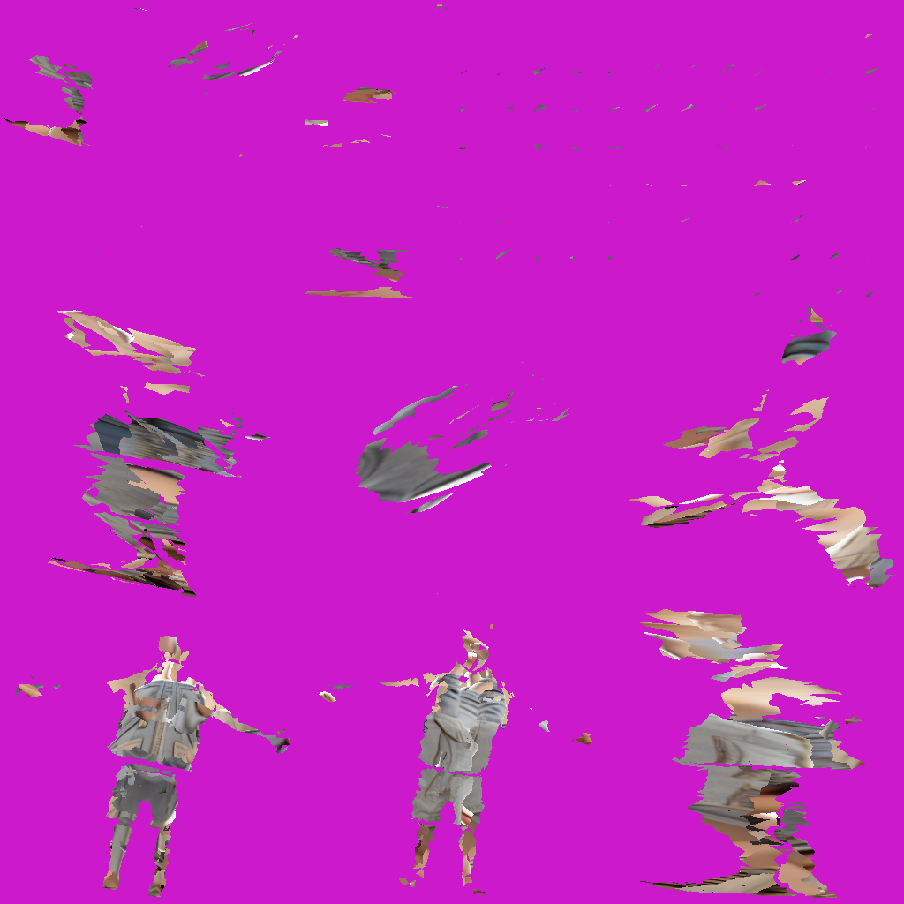

1. Mesh D — WINNER
baseline texture_project
2. Paint3D v1 — single ref
magenta + gris
3. Paint3D v2 — multi-ref + stage 2
pire, ninja figures
4. Paint3D v3 — Option A (photos init views)
identique v2
5. Paint3D v4 — Quick Win (ip_scale 1.5 + 8 views)
aucun gain — bottleneck résolution (128px/view)
Quick Win albedo atlas (showing the 128px/view problem)

8 petites silhouettes bruitées sur fond magenta